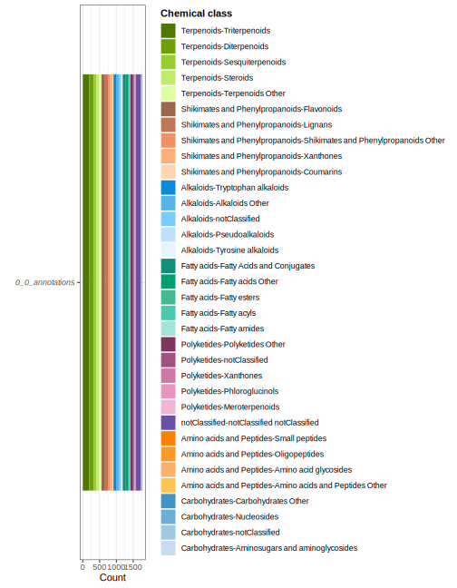
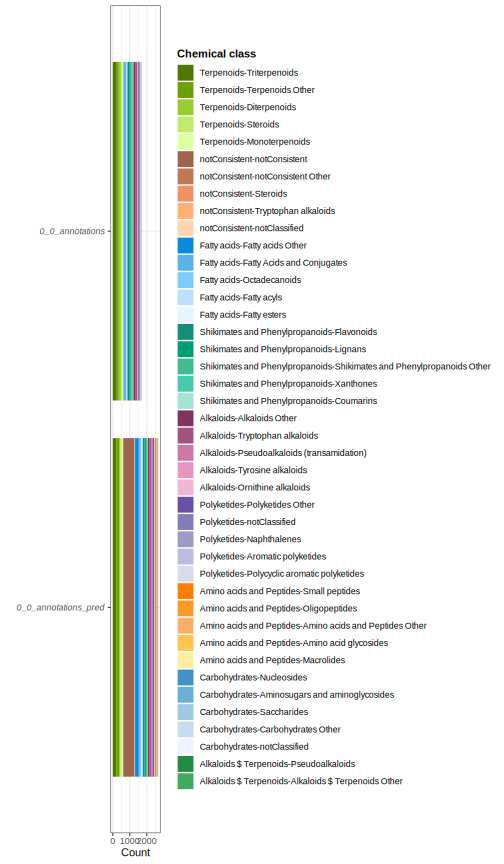

plots <- cascade::prepare_tima_annotations(
show_example = TRUE
) |>
cascade::plot_tima()
# cascade::prepare_tima_annotations(
# annotations = list(
# "yourExperiment1"="PathToYourTimaOutput1",
# "yourExperiment2"="PathToYourTimaOutput2"
# )
# ) |>
# cascade::plot_tima()4 Visualizing raw TIMA results
Adriano Rutz ![]()
This vignette describes additional helper functions to visualize TIMA results.
Visualization
To check the full results:
plots$histogram
plots$treemapplots$sunburstTo compare annotated and predicted classes:
list(
cascade::prepare_tima_annotations(
show_example = TRUE
),
cascade::prepare_tima_annotations(
show_example = TRUE,
predicted_classes = TRUE
)
) |>
tidytable::bind_rows() |>
list() |>
cascade::plot_tima() |>
purrr::pluck("histogram")
To compare different filtering thresholds:
list(
cascade::prepare_tima_annotations(
show_example = TRUE
),
cascade::prepare_tima_annotations(
show_example = TRUE,
min_score_biological = 0.2,
min_score_final = 0.4
),
cascade::prepare_tima_annotations(
show_example = TRUE,
min_score_initial = 0.2,
min_score_biological = 0.2,
min_score_chemical = 0.2,
min_score_final = 0.4,
min_matched_peaks_absolute = 6L,
min_matched_peaks_percentage = 0.5,
min_peaks = 10L
)
) |>
tidytable::bind_rows() |>
list() |>
cascade::plot_tima() |>
purrr::pluck("histogram")We hope you enjoyed using CASCADE and are pleased to hear from you!
For any remark or suggestion, please fill an issue or feel free to contact us directly.
Citation
BibTeX citation:
@online{rutz2025,
author = {Rutz, Adriano},
title = {4 {Visualizing} Raw {TIMA} Results},
date = {2025-07-10},
url = {https://adafede.github.io/cascade/vignettes/articles/IV-tima.html},
langid = {en}
}
For attribution, please cite this work as:
Rutz, Adriano. 2025. “4 Visualizing Raw TIMA Results.” July
10, 2025. https://adafede.github.io/cascade/vignettes/articles/IV-tima.html.